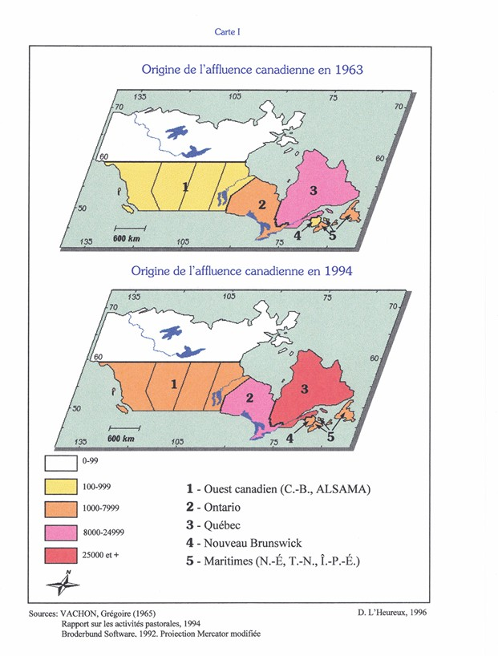
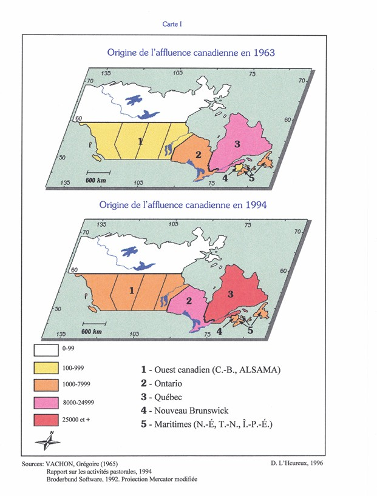
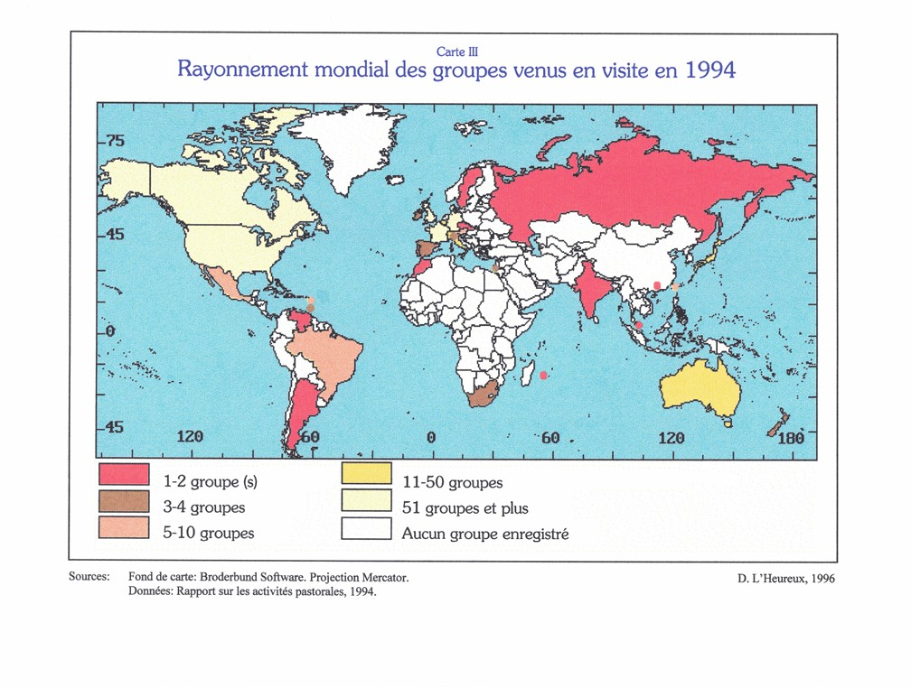
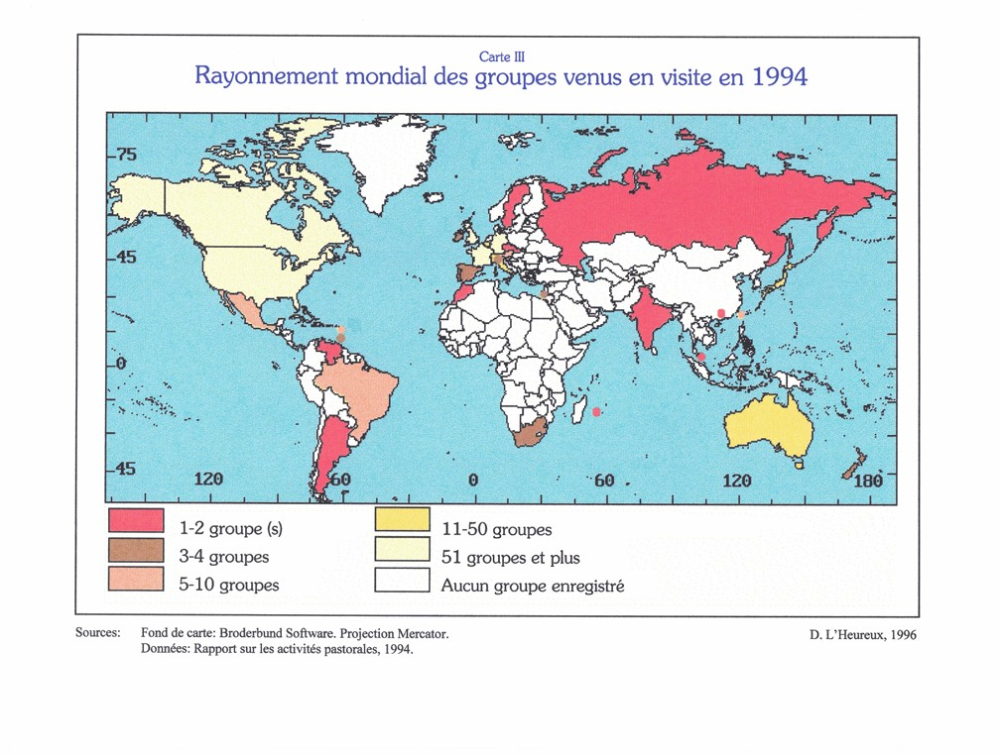
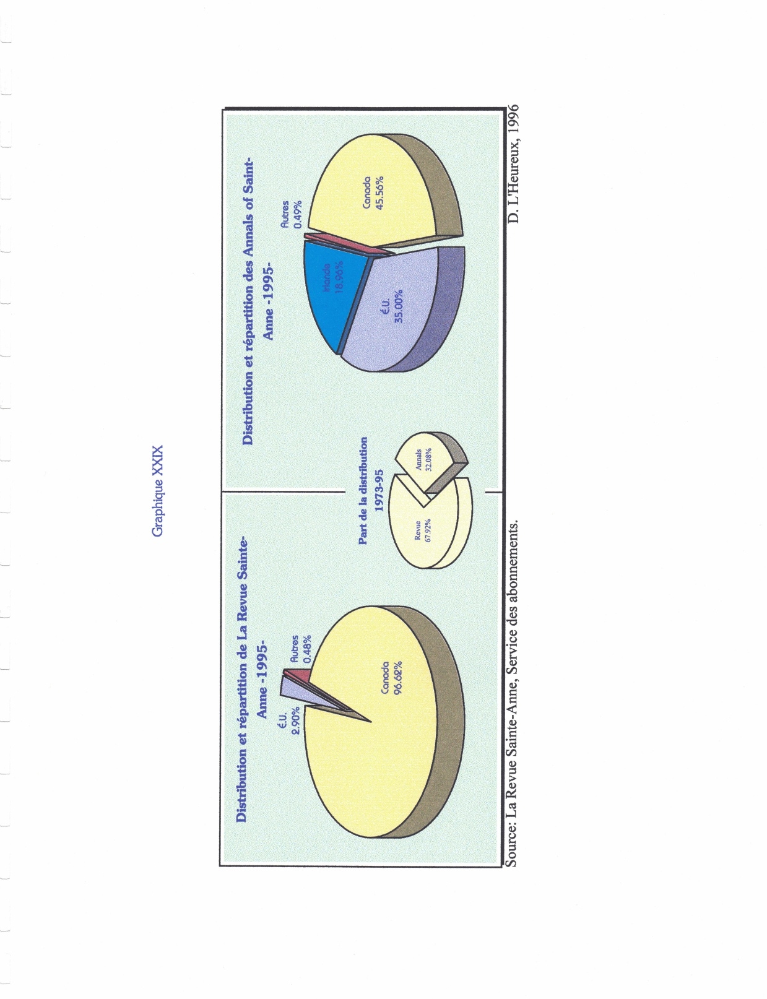
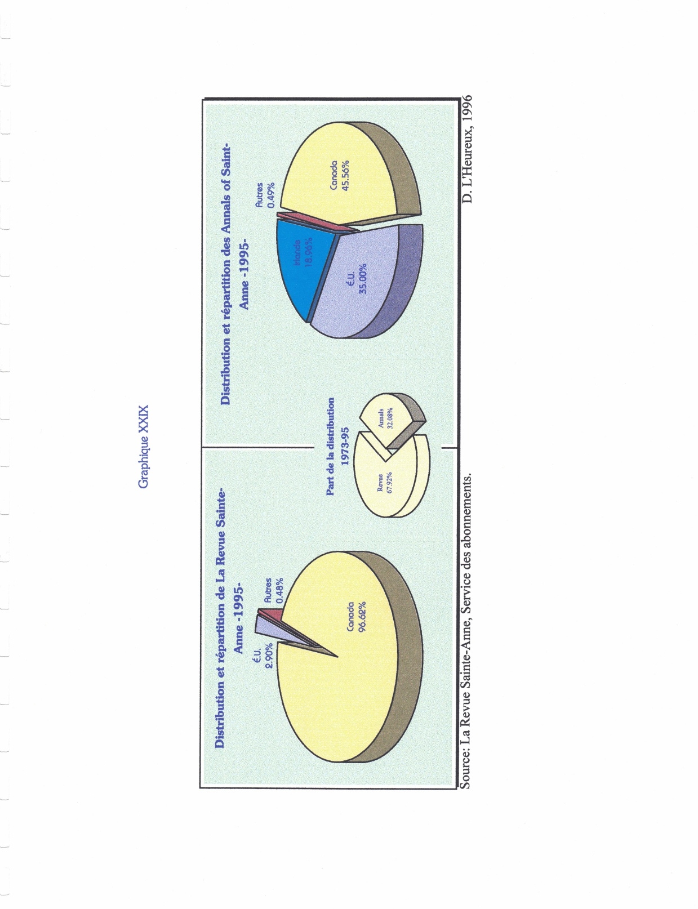

Mon mémoire de recherche de Baccalauréat
Ce mémoire de recherche a été rédigé dans le cadre du baccalauréat universitaire, où la réalisation d’un travail de recherche original constituait une exigence obligatoire pour l’obtention du diplôme et du grade de bachelier.
Plus qu’un simple exercice académique, il représente une démarche de réflexion approfondie, étalée sur plusieurs mois, et une étape marquante de mon parcours intellectuel et universitaire.
Plus qu’un simple exercice académique, il représente une démarche de réflexion approfondie, étalée sur plusieurs mois, et une étape marquante de mon parcours intellectuel et universitaire.


 

 



 
